รอบนี้ระบบของเราให้บริการลูกค้าโดยตรงและทำงานแทนคนมากขึ้น — ระบบตรวจ SHE ให้ลูกค้า CP Axtra, จอผู้บริหารที่ดึงตัวเลขเอง, แบบประเมินด้วย QR 8 ภาษา และเว็บไซต์ใหม่ของ ELMER · ขณะที่ธุรกิจอบรมทำสถิติใหม่ทั้งยอดลงทะเบียนและผู้ผ่านการอบรม
ผู้ผ่านการอบรม = รายชื่อที่ยืนยันผลแล้ว จึงเพิ่มย้อนหลังได้ — ส.ค. ปรับจาก 1,155 (รายงานรอบก่อน) เป็น 1,297 · * ต.ค. นับถึง 15 ต.ค.
ผู้ตรวจกรอกบนมือถือที่สาขา Lotus's (ออฟไลน์ได้) — ได้คะแนนและรายงานตามแบบของลูกค้า แล้วติดตามการแก้ไขจนปิดประเด็น
รอบไหนคนไม่ถึงขั้นต่ำ ทีมวันนี้ ภาพรวมเดือน ลูกค้า การเงิน — ดึงจาก 3 ระบบอัตโนมัติ ไม่มีใครต้องกรอก
แทน Google Form · ประเมินวิทยากรรายคน · ข้อสอบตรวจที่เซิร์ฟเวอร์
ยอดผู้อบรมสะสมอัปเดตเอง · ประกาศด่วน · อากาศ · อัลบั้ม
www.elmer-int.com · ที่ปรึกษา + ดูแลระบบบำบัดน้ำเสีย
ระบบจัดการอบรมความปลอดภัยเฉพาะองค์กร — ข้อเสนอผ่านแล้ว สร้างระบบจริงบน dev ใน 4 วัน (22–25 ก.ย.) · 34 หน้าจอ · 8 บทบาท
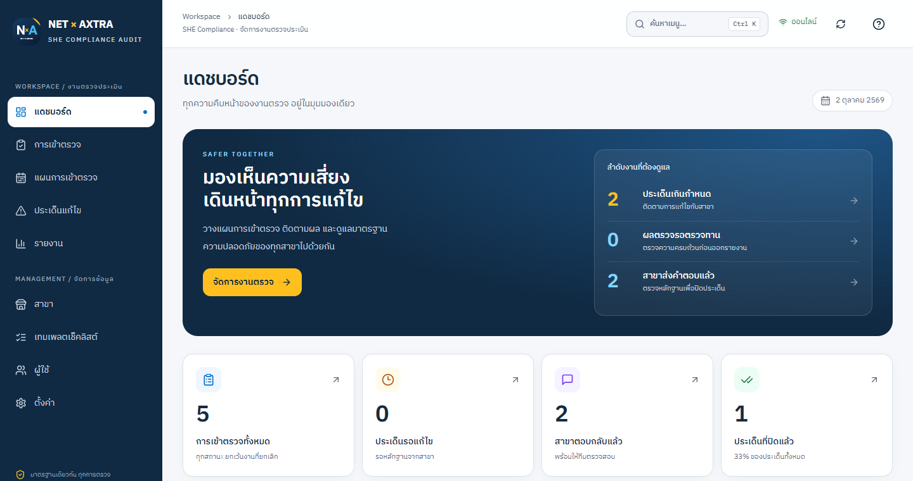
ข้อมูลทดสอบ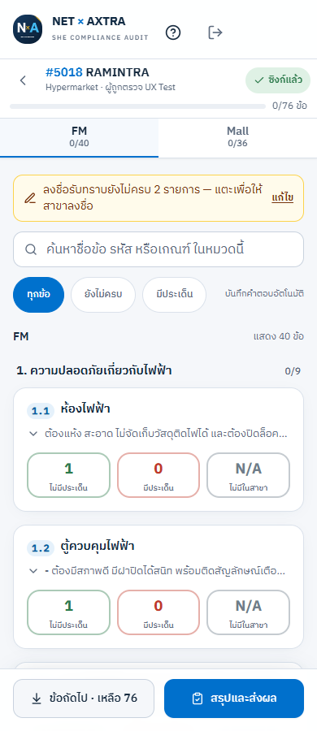
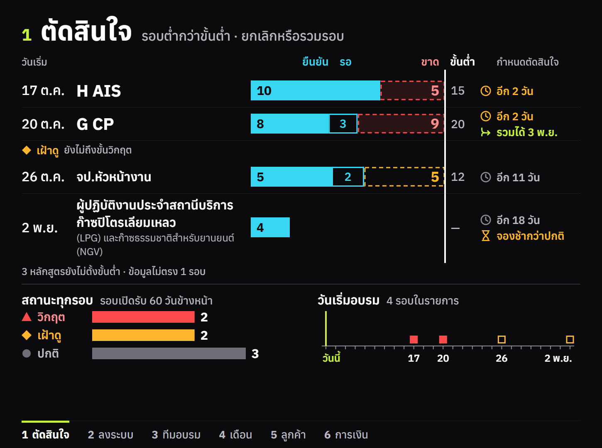
ภาพตัวอย่าง · ข้อมูลจำลอง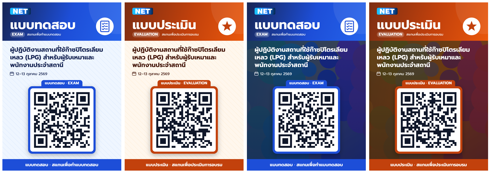
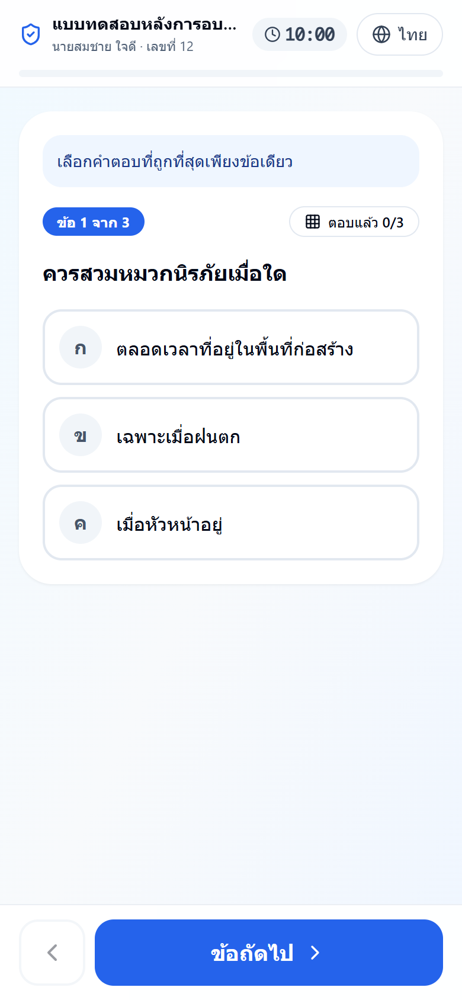
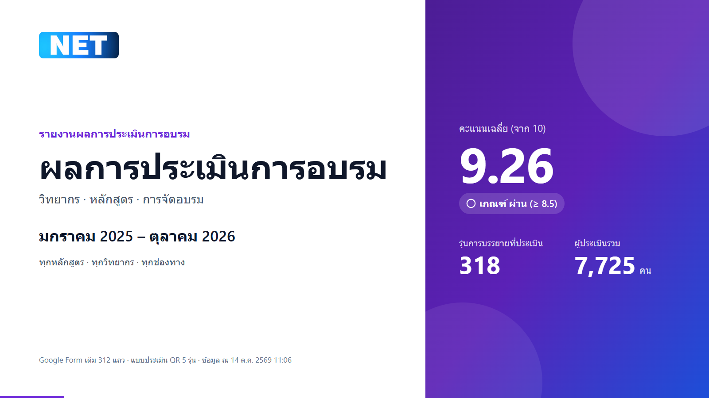
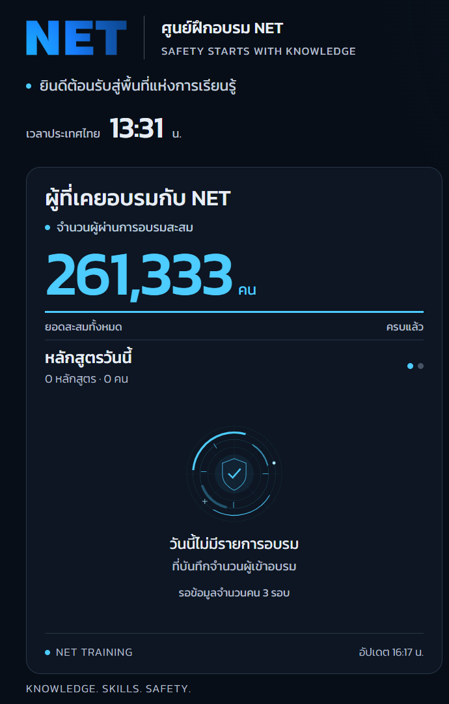
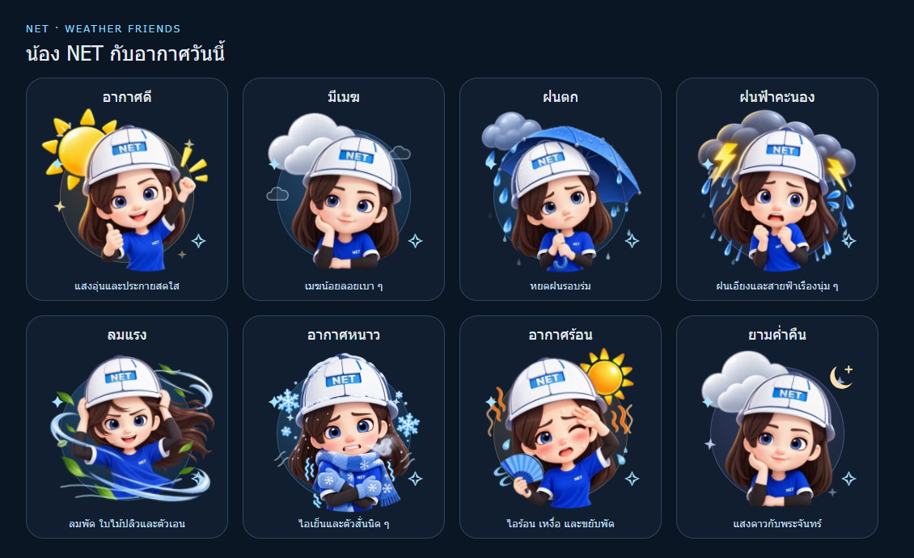
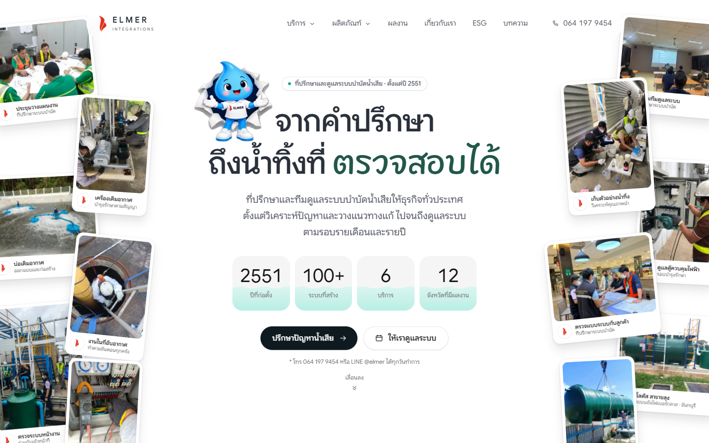
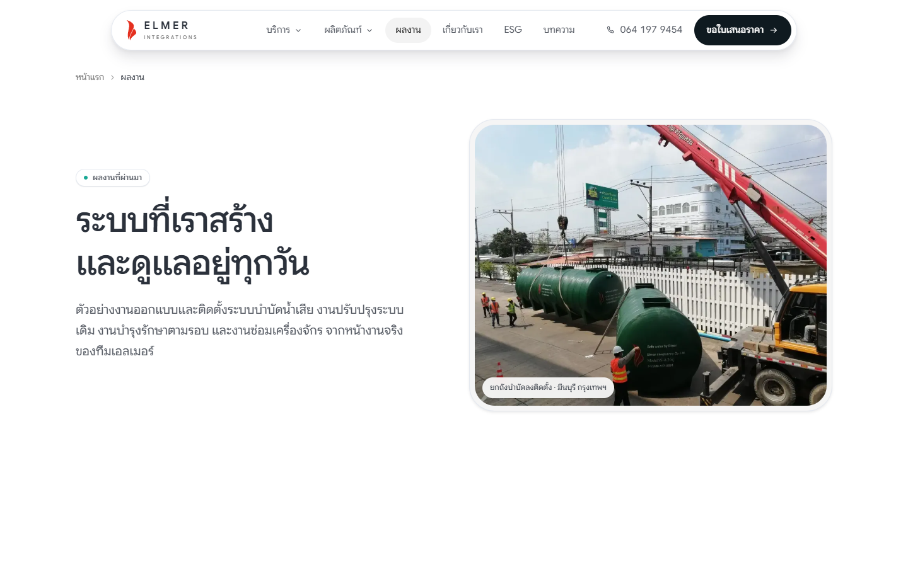
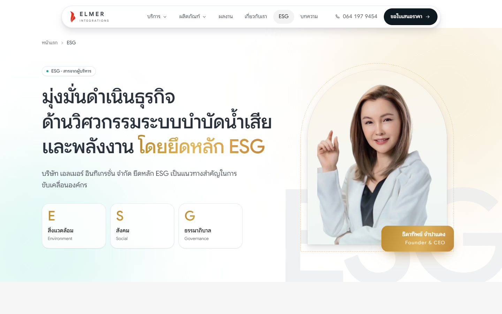
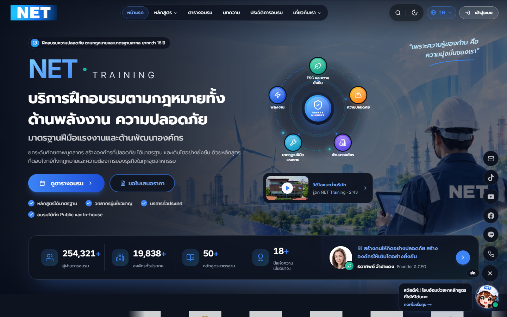
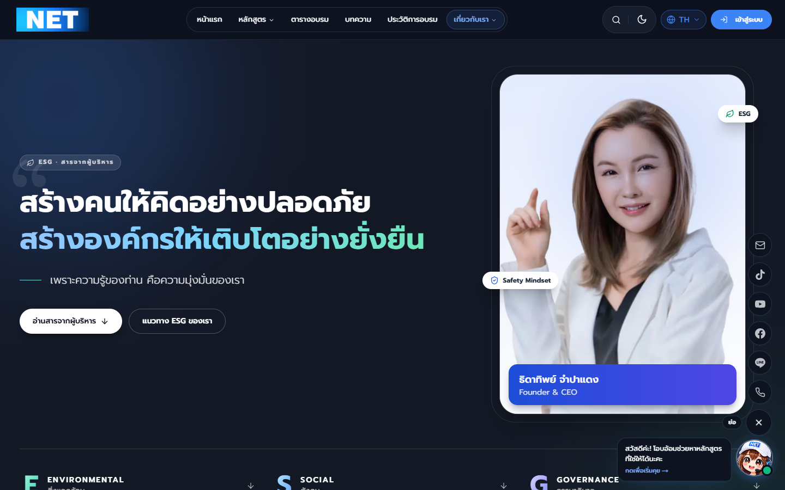
ตรวจความปลอดภัยภายในรอบ ก.ย. (เทียบเกณฑ์ VA/PT) — ข้อที่ร้ายแรงที่สุดปิดก่อนทั้งหมด
ยื่นใบเดียวจบ (ระบบลงเวลาให้เอง) · วันที่ไม่ได้ใช้ได้ค่าตอบแทน 8 ชม. OT เมื่อ HR ยืนยันสิ้นเดือน
กฎตัดวันลาชุดเดียวทุกหน้า — แก้ "ลาป่วยไปหักลากิจ" และใบลาข้ามปี · เห็นว่าใครลา/OT วันไหน อนุมัติจากปฏิทินได้
สูตรเดิมที่กระจาย 3 ที่รวมเป็นหนึ่ง และนับจากวันที่ส่งตรวจ · เวลาเฉลี่ยจริง 58 ชม./งาน
แยก EC ที่เกิดจากอุปกรณ์ IT ออกจากอันดับรายบุคคล — ให้คนกล้าแจ้ง EC มากขึ้น
มอบหมายตามตำแหน่ง/แผนก · วิดีโอกันกรอข้าม · คุมสอบรายหลักสูตร · นำเข้าประวัติจาก Excel ครั้งละ 2,000 แถว — รอ HR นำเข้าข้อมูลปี 2569
ค้นหาเมนูภาษาไทยด้วย Ctrl+K · แก้ที่เก็บรูปตรวจรถผ่าน QR (เดิมรูปไม่ถูกบันทึก) · ยอดเช็กชื่อขึ้นตั้งแต่ 17:00
เกิดหลังเปลี่ยนวิธีเก็บสถิติวันที่ 2 ก.ย. — หน้าแดชบอร์ดยังเปิดได้แต่ไม่มีข้อมูลใหม่ · รอบนี้ใช้คลิกจาก Google แทน และจะแก้เป็นงานแรกของรอบหน้า (ข้อมูล 6 สัปดาห์นี้กู้ย้อนหลังไม่ได้)
ทุกตัวเลขในชุดนี้ดึงจากระบบจริง — กดปุ่ม "ตาราง" บนกราฟเพื่อดูตัวเลขเต็ม หรือกด M เพื่อกลับไปสไลด์ที่ต้องการ